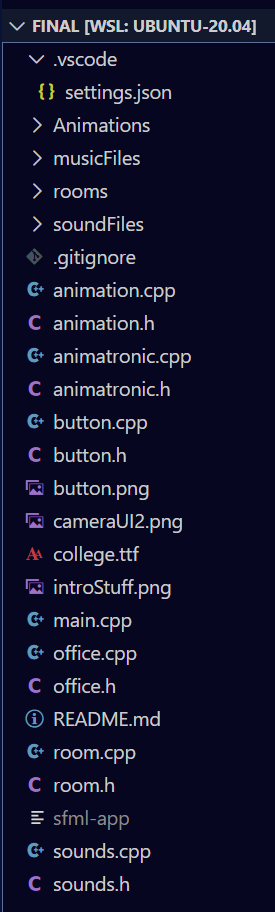
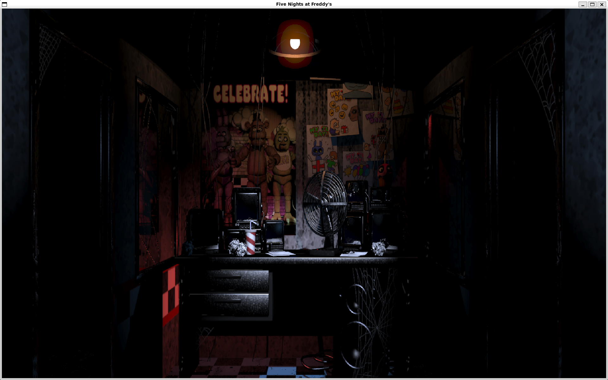
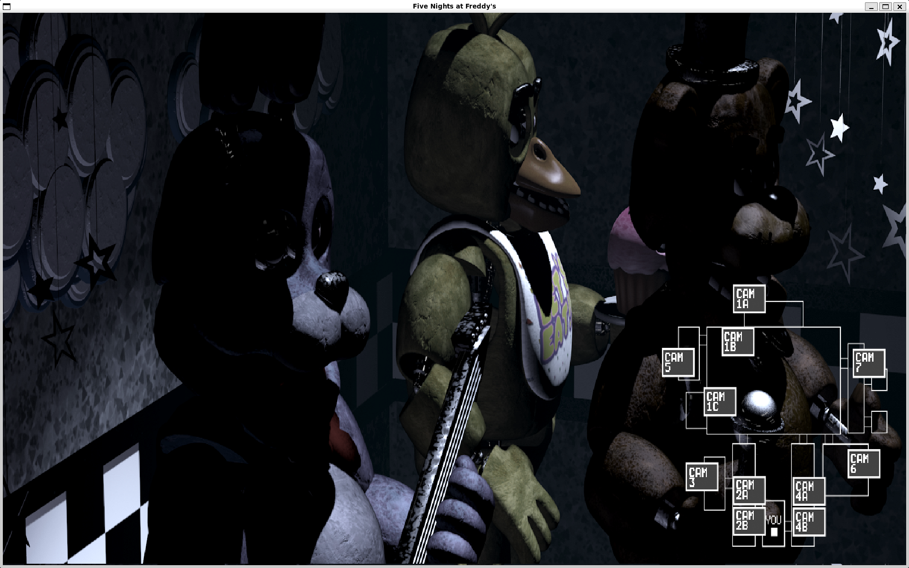

Computer Science Student at North Idaho College

This project was extremely fun. Me and two other people decided to recreate the popular game Five Night's at Freddys in SFML. We added aspects such as switching cameras, random animatronic movements, defending against animatronics using the cameras, and jumpscare animations. While the full scope of the game was a little too heavy for our timetable, we got the core personality of the game down. Overall, I would say this project was a success and I would love to finish it eventually.


